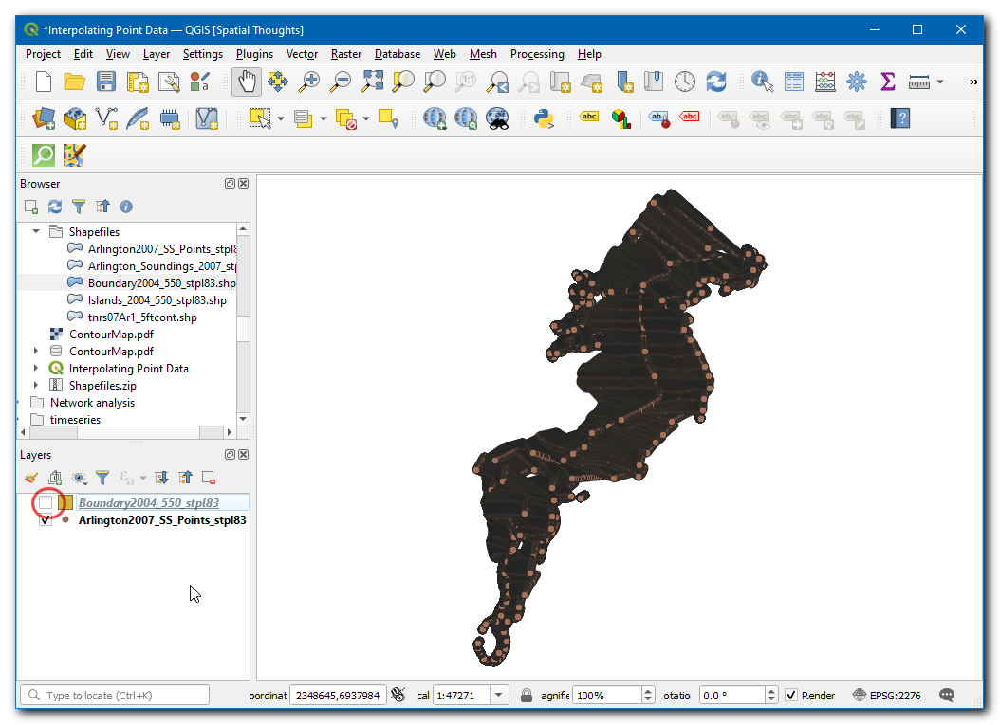
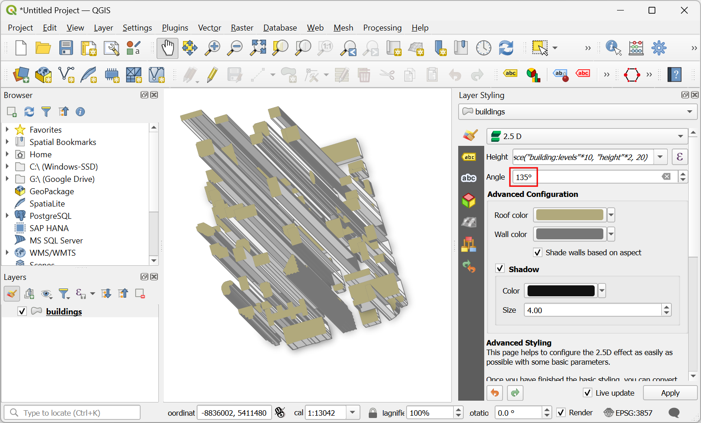
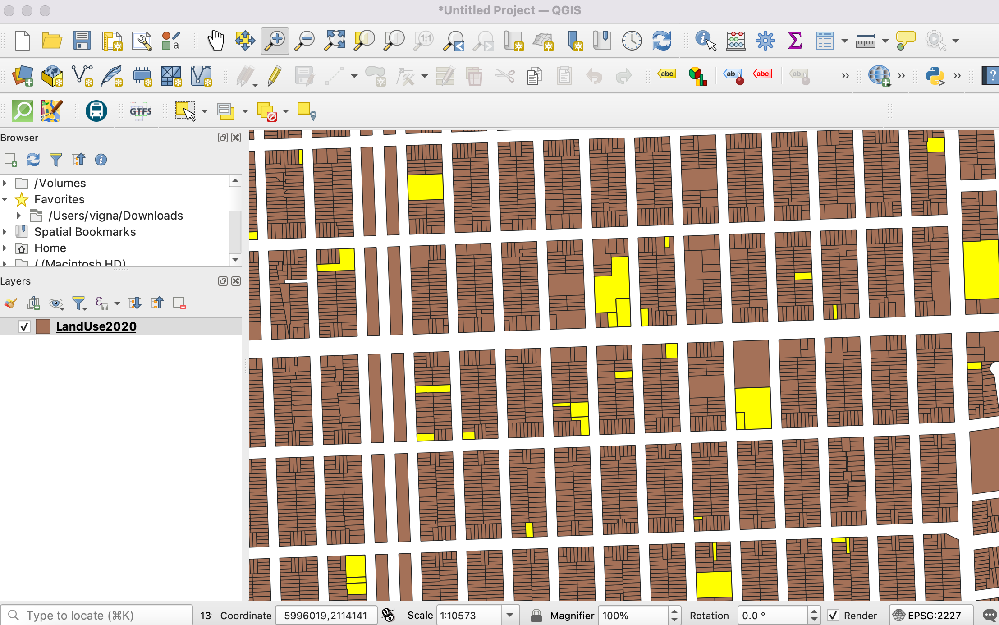
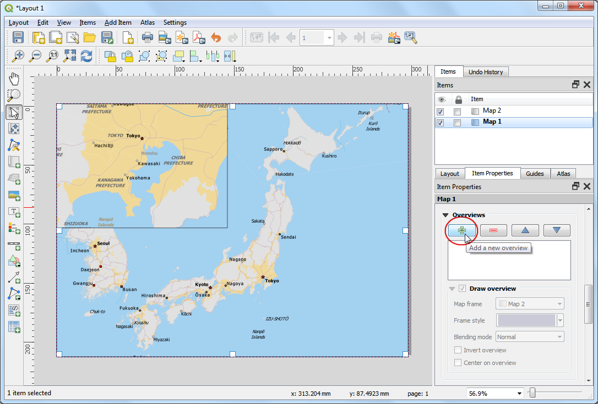

Izvajanje prostorskih poizvedb (QGIS3)¶
Prostorske poizvedbe so ključne za številne vrste analiz GIS. Prostorske poizvedbe omogočajo izbiro elementov v sloju glede na njihove prostorske odnose (sekajo, vsebujejo, se dotikajo itd.) z elementi iz drugega sloja. V QGIS je ta funkcionalnost na voljo prek orodij za obdelavo Select by Location in IExtract by Location.
Pregled naloge¶
Delali bomo z dvema podatkovnima slojema za mesto Melbourne v Avstraliji. Glede na podatkovne sloje za lokale in bare v mestu ter lokacije vseh postaj podzemne železnice želimo poiskati vse bare in lokale, ki so oddaljeni 500 metrov od postaje podzemne železnice.
Česa se bomo še naučili¶
Izbira ustrezne projekcije in ponovno projiciranje vektorskih podatkov.
Ustvarjanje pasov (buffer).
Delo s podatkovnim formatom geopaketa (.gpkg, geopackage).
Pridobivanje podatkov¶
City of Melbourne’s Open Data Platform zagotavlja številne podatkovne zbirke za mesto, pripravljene za GIS.
Prenesite zbirko podatkov Metro Train Stations with Accessibility Information, ki jo je pripravila družba Metro Trains Melbourne. Izvozite podatke v izvirni obliki.

Prenesite zbirko podatkov Bars and pubs, with patron capacity, ki jo je pripravil ity of Melbourne’s Census of Land Use and Employment (CLUE). Podatke izvozite kot CSV.

Zaradi priročnosti lahko kopijo podatkovnih nizov neposredno prenesete s spodnje povezave:
metro_stations_accessbility.zip
Bars_and_pubs__with_patron_capacity
Vir podatkov: [CITYOFMELBOURNE]
Postopek¶
V brskalniku QGIS poiščite datoteko
metro_stations_accessbility.zipin jo razširite. Izberite datotekometro_stations_accessbility.shpin jo povlecite na delovno površino. Na plošči Layers se naloži nova plastmetro_stations_accessbility.

Podatkovni sloj za bare in gostilne je v obliki CSV. Če ga želite naložiti v QGIS, pojdite na . ( Za več podrobnosti o uvozu datotek CSV glejte Uvoz podatkov preglednic ali datotek CSV (QGIS3))

V pogovornem oknu Data Source Manager | Delimited Text` poiščite in kot File name` izberite preneseno datoteko
Bars_and_pubs__with_patron_capacity.csv. Stolpca X polje in Y polje morata biti samodejno izbrana nax koordinataoziromay koordinata. Kliknite Add.

Na plošči Layers bo dodana nova plast
Bars_and_pubs__with_patron_capacity. Oba vhodna sloja sta v geografskem koordinatnem referenčnem sistemu (CRS)EPSG:4326 WGS84. Za izvajanje prostorskih analiz je priporočljivo uporabljati projicirani koordinatni referenčni sistem (CRS). Zato bomo zdaj oba sloja ponovno projicirali v ustrezen regionalni koordinatni sistem CRS, ki zmanjšuje popačenja in nam omogoča delo v enotah razdalje, kot so metri namesto stopinj. Pojdite na .

Poiščite in poiščite orodje . Z dvojnim klikom ga zaženite.

Izberite
Bars_and_pubs__with_patron_capacitykot Input layer`. Kliknite gumb Select CRS poleg Target CRS.

Pri izbiri predvidenega koordinatnega sistema za analizo najprej poiščite regionalni koordinatni sistem CRS za območje, ki vas zanima. Za Avstralijo je Map Grid of Australia (MGA) 2020 mrežni sistem na podlagi UTM, ki se uporablja za lokalno in regionalno kartiranje. Melbourne spada v območje UTM 55, zato lahko izberemo CRS GDA 2020 / MGA zone 55 EPSG:7855`.

Opomba
Če niste prepričani o lokalnem sistemu CRS za regijo, v kateri delate, je izbira sistema CRS za območje UTM, ki temelji na datumu WGS84, varna izbira. Številko območja UTM svoje regije lahko ugotovite z uporabo UTM Grid Zones of the World.
Nato kliknite gumb … poleg Reprojected in izberite
Save to GeoPackage. Geopackage je priporočeni odprti format prostorskih podatkov in je privzeti format za izmenjavo podatkov za QGIS3. Posamezna datoteka GeoPackage.gpkglahko vsebuje več vektorskih in rastrskih slojev.

Poimenujte geopaket kot
spatialqueryin kliknite Save.

Ko boste pozvani k vnosu imena plasti, vnesite
bars_and_pubsin kliknite OK`. Kliknite Run za ponovno projiciranje plasti.

Okno bo preklopilo na zavihek Log in videli boste, kako se algoritem izvaja in ustvarja novo izhodno plast
bars_and_pubs.

Zdaj bomo ponovno projicirali plast
metro_stations_accessbility. Preklopite nazaj na zavihek Paramters v oknu Reproject layer. Izberitemetro_stations_accessbilitykot Input layer. Ohranite isti Target CRS. Nato kliknite gumb … poleg Reprojected` in izberiteSave to GeoPackage. Izberite isto izhodno datotekospatialquery(Ne pozabite, da lahko ena datoteka geopaketa vsebuje več slojev, zato bomo novi sloj shranili v isto datoteko geopaketa). Vnesitemetro_stationskot Naziv sloja. Kliknite Run.

V glavnem oknu QGIS boste videli 2 nova sloja, naložena na plošči Layers:
bars_and_pubsinmetro_stations. Vidnost izvirnih slojev lahko izklopite. Zdaj smo pripravljeni na prostorsko poizvedbo. Ker nas zanima izbira barov in gostiln v oddaljenosti do 500 m od postaj podzemne železnice, je prvi korak ta, da okoli postaj podzemne železnice ustvarimo varovalni prostor, ki predstavlja naše območje iskanja. Poiščite in poiščite orodje v Processing Toolbox in ga zaženite z dvojnim klikom.

V pogovornem oknu Buffer izberite
metro_stationskot Input layer. Kot Razdalja nastavite500metrov. Rezultat shranite v isti geopaketspatialqueryin vnesitemetro_stations_bufferskot Layer name. Kliknite Run.

Na plošči Layers boste videli naložene nove plasti
metro_stations_buffers. Zdaj lahko ugotovimo, katere točke iz slojabars_and_pubsspadajo v poligone iz slojametro_stations_buffers. Poiščite orodje (Vektorski izbor –> Izvleček po lokaciji) v razdelku Processing Toolbox in ga zaženite z dvojnim klikom.

Opomba
Extract by location ustvari nov sloj z ustreznimi elementi iz prostorske poizvedbe. Če želite samo izbrati elemente, uporabite orodje Select by location.
V pogovornem oknu Extract by location (Izloči po lokaciji) izberite
bars_and_pubskot Extract features from (Izloči predmete iz). OznačiteIntersectkot geometry predicate. Nastavitemetro_stations_bufferskot By comparing to the features from. Rezultat shranite v geopaketspatialquerykot slojselected. Kliknite Run.

Ko se obdelava konča, se na plošči Layers vidijo dodane
izbraneplasti. Upoštevajte, da ta sloj vsebuje samo točke izbars_and_pubs, ki spadajo v poligone bufferja.

Naša analiza je končana. Opazili ste, da so poligoni varovalnih območij videti ovalne oblike. To je zato, ker je naš projekt CRS še vedno nastavljen na EPSG:4326 WGS84. Za boljšo vizualizacijo rezultatov lahko obiščete in izberete
GDA 2020 / MGA zone 55 EPSG:7855, ki smo ga uporabili za analizo. Po nastavitvi na ta CRS se bo varovalni mehanizem prikazal v pravilni obliki.

If you want to give feedback or share your experience with this tutorial, please comment below. (requires GitHub account)